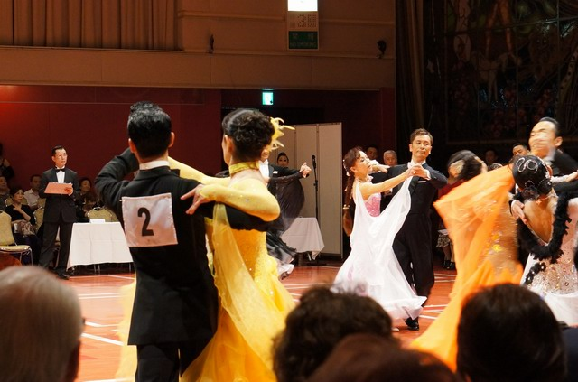
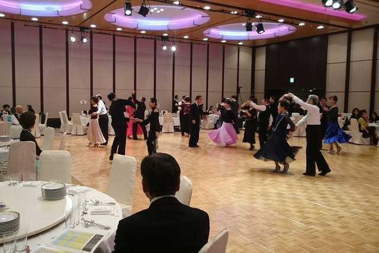

社交ダンス習得履歴
2016年3月にクイーンエリザベス号に乗船することを決めたため、乗船するからには家内と社交ダンスを踊りたいと思い、2015年7月より水田ダンススタジオに週一回のペースで習い始めた。
社交ダンスは20歳代にデモ、競技会にでるレベルまで上達していたものさすがにこの年になると大半を忘れていた。
2015年9月23日、水田ダンススタジオも参加するダンスパーティー（主に発表会、先生によるデモ）に妻と参加し、数分程度ではあるが込み合う中でダンスを踊った。

写真は競技風の発表会！
2016年2月6日、水田ダンススタジオ主催の新春ダンスバーティーに妻と参加した。会場は東急ホテルで参加者がさほど多くないため踊るスペースが十分にあり、ある程度踊る練習ができた。課題はスローの踊り込みが不十分であることがよく分かった。

写真はパティ―開催時刻少し前
以下,
水田ダンススタジをで習得したステップをまとめた。
１．タンゴ
（１）
・２ウオーク
・リンク
・クローズドプロムナード
・バックコルテ
・2ウオーク
・オープンリバースターン
・プログレッシブリンク
・オープンプロムナード
・アウトサイドスイブル
・コントラチェック
・ナチュラルプロムナードターン
・ロックターン
.ファイブステップ
（２）
・２ウオーク
・リンク
・クローズドプロムナード
・バックコルテ
・2ウオーク
・オープンリバースターン
・プログレッシブリンク
・ナチェラルツイストターン
・チェイス(SQQQQQ&Q QQS)
・オープンプロムナード
・アウトサイドスイブル
・コントラチェック
・クローズドプロムナード
・バックコルテ
・リバースターン(ロックQQ&QQS）
・リンク
・クローズドプロムナード
・ファイブステップ
（３）タンゴ初心者講座② 2016/1/7
・オープンプロムナード
・ベーシックリバースターン
・コントラチェック
・オープンプロムナード
・アウトサイドスイーブル
・ブラッシュタップ
・タップ（PP)
（４）タンゴ初心者講座③ 2016/1/14
・リバースプロムナードリンク
・オーバースウエイ
・エンディング４
・ナチョナルツイストターン
・クローズドプロムナード
（４）の後に追加 2016/3/10
・バックコルテ
・ベーシックリバースターン（ロックなしQQSQQS）
・リンク
・クローズドプロムナード
・ファイブステップ
・リバースプロムナードリンク
・スローアウェイ ?
・ナチョナルツイストターン
（３）の初めに
=====================================================
２．ルンバ
（１）
・予備足
・オープンヒップツイスト
・ホッキースティック
・ニューヨーク
・スポットターン
・オープニングツイスト
・アレマーナ
・ハンドトーハンド
・（スポットターン）--> 左側で回し
・ショルダートーショルダー
・スポットターン
--------------------------
・２３と左足前より４１で横に回し
・ナチョナルトップ（回転）
・オープンヒップツイスト
（ファン状態）
・スライディングドアーズ（離れる）
・アレマーナ
・オープニングアウトライトトーレフト（肩を組む）
・回してホームポジション
（２）
・予備足
・オープンベーシックムーブメント(4)
・オープンヒップツイスト(4)
・アレマーナ(8)
・ロープスピニング（8)一周回す
・オープニングアウトライトトーレフト+スパイラルターン(12)肩を組む
・アイーダ(4)
・キュバンロック(4)
・スポットターン(4) 左ターン
・オープンベーシックムーブメント(4)
・オープンヒップツイスト(4)
・スライディングドアー、手を上げず左手より右手に渡す感じ、3回目4近辺で手を取り女性を左に回すように離す
・ナチョナルトップ(3回）
・コンティニアスヒップツイスト(8)4で左足を右足後ろに掛ける
・クローズドヒップスイスト(8)ファンポジション
（３）ルンバ初心者講座③ 2015/1/21
・アレマーナ
・クローズドヒップスイスト
・ホッキ―スティック
・オープンベーシックムーブメント１～３
・ナチョナルトップ(3回）
・ファン
・ホッキ―スティック
（４）ルンバ初心者講座④ 2015/1/28
・アレマーナ
・クローズドヒップスイスト
・オープンベーシックムーブメント１～３
・アレマーナ
・オープニングアウトライトトーレフト
・スパイラルターン
・アイーダ(4)
・キュバンロック
・スポットターン
（４）の後に追加 2016/2/4
・アレマーナ(8)
・ロープスピニング（8)一周回す
・オープニングアウトライトトーレフト（早いリズムで左右、その後リズム戻し）
・ファンに開き
・スライディングドアー
=====================================================
３．ワルツ
（１）
・予備足（３rd）(1)
・ナチョナルスピーンターン(6)
・リバースターン(9)
・ホイスク(3)
・シャッスfrom PP(3)
・ナチョナルターン(3)
・オープンインピダンス(3)
・ウイーブ(6)
・ナチョナルターン(3)
、左足バック右バック左よせて(3)
・コントラチェック(6)
・ウイーブ(6)
・ナチョナルスピーンターン(6)
リバースターン(3)
・プログレッシブシャッセtoライト(3)
・プログレッシブロックtoライト(3)
・バックホイスク(3)
・ウイーブ風一時停止シャッセ(6)
・クローズドチェンジ(3)
・ナチョナルターン(3)
（２） ワルツ初心者講座③ 2015/12/10
・予備足(1)
・ナチョナルターンの１～３(3)
・バックホイスク(3)
・ウイーブFrom PP(6)
・ナチョナルターンの１～３(3)
・バックロック(3)
・クローズドインピダンス(3)
・リバースターン４～６、１～６(9)
・ホイスク(3)
（３） ワルツ初心者講座④ 2015/12/17
・予備足(1)
・ナチョナルターンの１～３(3)
・クローズドインピダンス(3)
・リバースターンの４～６(3)
・プログレッシブシャッセ to R(3)
・アウトサイドチェンジ(3)
・ナチョナルスピーンターン(6)
・ターニングロック(3)
・レフトホイスク(3)
・コントラチェック(3)
（２）のホイスクの後に追加、2016/4/7
・シャッスfrom PP(3)、（３）へ予備足なしで入る
（３）の後に追加、2016/4/7
・シャッスfrom PP(3)、（２）へ予備足なしで入る
=====================================================
４．スロー）
（１）
Sは踵から、Qでつま先、Qでつま先からヒール、Sが右足時は体を右に（スローのスでは真正面ローで右に向ける）、左足時は左に向ける。但しSの最初は正面向く。
・予備足
・フェザーステップ
・リバースターン （右スローはヒールでついてつま先で回るイメージ）
・スリーステップ
・ナチョナルターン前半(SQQ)
・オープンインピダンス(SQQ)
・ウイーブ(SQQQQQQ)
・チェンジディレクション(SSS)
・コントラチェック(SQQ)
・フェザーステップ
(繰り返し）
（２）スロー初心者講座① 2015/12/24
・フェザーステップ
・リバースターン
・スリーステップ
・ナチョナルターンの１～３
・クローズドインピダンス＆フェザーフィニッシュ
（３）スロー初心者講座② 2015/12/19
・オープンインピダンス
・ナチョナルウイーブ
・チェンジオブディレクション
・フェザーステップ
・バウンスフォーラウエイ
・スリーステップ
・カーブドフェザー
・クローズドインピダンス＆フェザーフィニッシュ
（２）の後に追加 2016/2/13
・名前不明 <左前(S)、右左に寄せ右へ(Q)、左右の前に(Q)、その後右足より(S)(Q)と前に進み最後右にカーブ(Q)>
・（３）のオープンインピダンスへ進めていく
（３）の後に追加 2016/2/25
・スリーステップ
・ナチョナルターンの１～３
・オープンインピダンス
・（２）フェザーステップ、リバースターンへ戻る
戻る